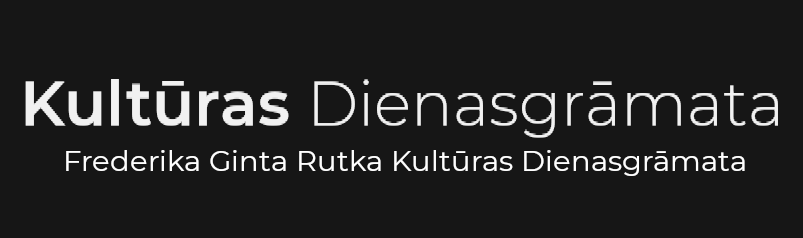
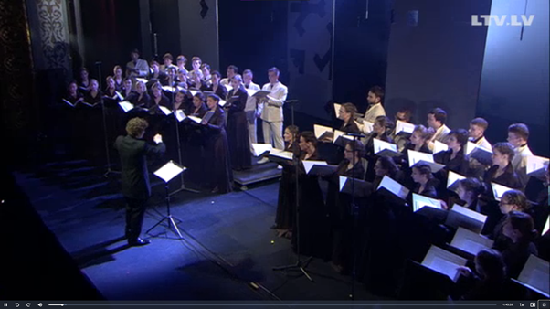
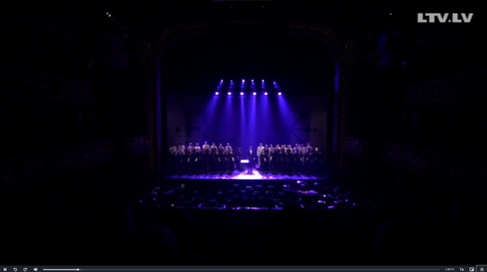
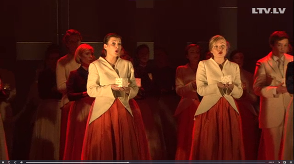
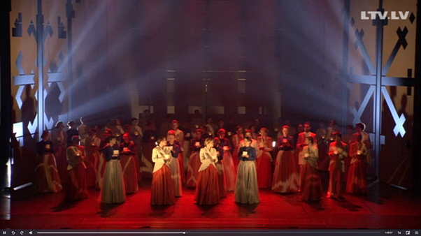
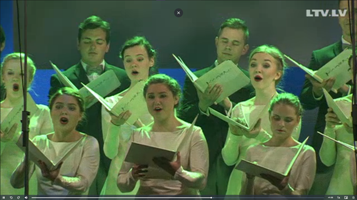
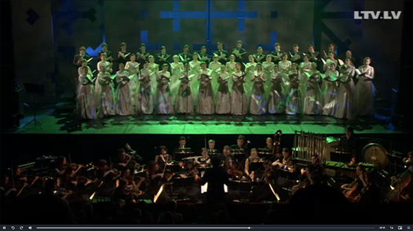
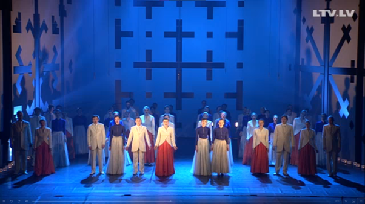
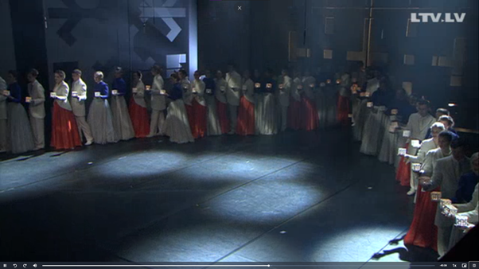

<!DOCTYPE html>
<html>
<head>
<style>
@import url('https://fonts.googleapis.com/css2?family=Montserrat:wght@300&display=swap');
</style>
<title>Kultūras Dienasgrāmata</title>
	<link rel="stylesheet" href="101021.css" />
</head>

<body>
<aside>
<div class="menu">

	<nav>
		<ul id="ieraksti">
			<li class="ieraksti"><a class="ieraksti" href="../../kult_dien/1.html">Ieraksti</a></li>
		</ul>
	</nav>
	<ul style="text-align: center; list-style-type: none; margin-top: 40px; padding: 0;" class="161021">
		<li class="161021"><a class="161021" href="../../kult_dien/161021/161021.html">Ērika Ešenvalda un Selgas Mences meistarklase</a></li>
	</ul>
</aside>

<article>
	<section>
		<h1 style="text-align:center; font-size: 30px;">Kora "Kamēr..." 25 gadu jubilejas koncerts</h1>
			<ul>
				<li>Kad: 25.05.2015 19:00 (Koncertieraksts 10.10.2021 20:00)</li>
				<li>Kur: Latvijas Nacionālajā operā (lsm.replay.lv)</li>
			</ul>
		<h2>Konteksts</h2>
			<p>2015. gada 25. maijā 19:00 koris “Kamēr…” atzīmēja savu 25 gadu jubileju Latvijas Nacionālajā operā. 2021. gada 10. oktobrī es noklausījos koncerta ierakstu replay.lsm.lv. Koncertā izskanēja Ērika Ešenvalda, Raimonda Tigula un Gabriela Džeksona dziesmas. I daļa – a capella Ē. Ešenvalda cikls – II daļa – Raimonda Tigula cikls – III daļa – Gabriela Džeksona skaņdarbs korim un orķestrim. </p>
		<h2>Atsauksmes</h2>
		
			<p>Koncerts man patika ļoti. Tā laikā noilgojos no koncertiem klātienē, un biju laimīgs, ka šis, tiešām, skaistais koncerts, bija pieejams ierakstā. I daļa aizsākās ar Ērika Ešenvalda dziesmu ciklu “Putna miegā” ar Ineses Zanderes vārdiem. Šī cikla laikā bija interesanti, ka katru dziesmu nodiriģēja cits diriģents, sākot ar kora “Kamēr…”  2012 – 2018. gada māksliniecisko vadītāju Jāni Liepiņu. Tad nākamie diriģenti ir tīri nezināmi, bet no zināmākajiem, kas diriģēja pirmajā daļa kori bija Mārtiņš Ozoliņš, Kaspars Ādamsons un Māris Sirmais. Klausoties šo ciklu, salīdzināju tām Ešenvalda dziesmām, kuras pats esmu dziedājis un pētījis. Secināju, ka Ērikam Ešenvaldam ļoti patīk spēlēties ar akordiem, balsīm un skaņām, jo dziesmu atskaņošanas laikā citviet mūzika bija plūstoša, maiga, bez straujām kustībām un mazām disonancēm, bet dažkārt strauja, asa, ar lielām disonancēm. Dziesmās arī sadzirdēju ļoti daudz pilnas harmonijas. Viss ieintriģēja klausītājus un mani baudīt koncertu vēl un vēl, meklēt mūzikā stāstu. Katra frāzes beigas nebeidzās, un tik iegāja nākamajā frāzē, vedot dziesmu uz priekšu un padarot to interesantāku.</p>
			
			<p>II daļa bija mana mīļākā daļa. Tā bija Raimonda Tigula dziesmu cikls jauktajam korim un instrumentālajam ansamblim “Teika par mums” ar Rasas Bugavičutes vārdiem. Šai daļā mani visvairāk uzrunāja tas, ka te stāstu meklēt nevajadzēja. Tas bija acu priekšā. Šajā daļā bija ieviesta horeogrāfija. Koris nevis stāvēja un dziedāja augstajos podestos, bet staigāja un dziedāja ap skatuvi. Vēl pie šī, koris vairs nebija a capella, bet ar pavadījumu, kurā ļoti izcēlās zvanu skaņas. Pati mūzika bija Raimonda Tigula parastais. Vienkāršas notis bez lēcieniem, parastas harmonijas. A capella nebūtu interesanti, bet tas, kas parasti izglābj, un arī šeit padarīja labāku, ir R. Tigula pavadījumi. Tie iedod spēku dziedājumam, padarot dziesmu izcilu. Perfekts piemērs ir “Lec Saulīte”. Melodija tai ir parasta, bet pavadījums ir vienkārši nepārspējams.  Šī daļa, es teiktu, bija koncerta kulminācija. Klausoties šīs dziesmas, es aizvien vairāk sapratu, ka vēlos būt diriģents, aizvien vairāk sapratu, ka gribu uz koncertiem un aizvien vairāk sapratu, ka man pietrūkst Dziesmu svētku.</p>
			<p>III daļa man nenāca pie sirds. Lai gan bija Gabriela Džeksona “Spring Rounds” jauktajam korim un orķestrim, nebija tuvu tik labi, kā bija iepriekšējās divas daļas. Tā jau kopumā, skaņdarbs bija interesants un jauks, bet izpilde nebija tā labākā. It sevišķi no kora puses, dikcijas nebija. Es nesapratu nevienu vārdu, kuru koris izdziedāja. Skaņdarbā arī piemita īpašība, daudz vienādu vai līdzīgu skaņu, kas manām ausīm nepatīk. Ja skaņdarbu būtu klausījies vienu pašu, tad varbūt man tas vairāk patiktu, bet salīdzinājumā ar to, kas skanēja iepriekš, šī daļa nebija pat tuvu tik laba. Koris atgriezās pie stāvēšanas. Skaņdarba kulminācijā pievienojās soprāna solo, kas bija tīri klausāms, bet tā labu atsauksmju par šo daļu īsti nav.</p>
			<p>Koncerts izskanēja ar Gaismas pili, kuru diriģēja Māris Sirmais, kora dibinātājs, un kurā iesaistīja publiku. Starp skatītājiem ieraudzīju Dziesmu svētku goda virsdiriģentu Jāni Erenštreitu, kurš diriģē Latvijas himnu, bravūrīgi dziedam līdz, kas iepriecēja. Kopumā es vērtēju šo koncertu 5/5. Lai gan III daļa nebija tik laba, es nespēju ielikt zemāk par maksimālo II daļas dēļ. Visticamāk, ka es klausīšos to daļu vēl kādu laiku.</p>
		<h2>Ekrānšāviņi no koncerta</h2>
			<div class="row">
				<div class="column">
					
				</div>
				<div class="column">
					
				</div>
				<div class="column">
					
				</div>
				<div class="column">
					
				</div>
				<div class="column">
					
				</div>
				<div class="column">
					
				</div>
				<div class="column">
					
				</div>
				<div class="column">
					
				</div>
			</div>
	</section>
</article>

<footer>
<p>&copy; Frederika Ginta Rutka Kultūras Dienasgrāmata</p>
</footer>
</body>
</html>